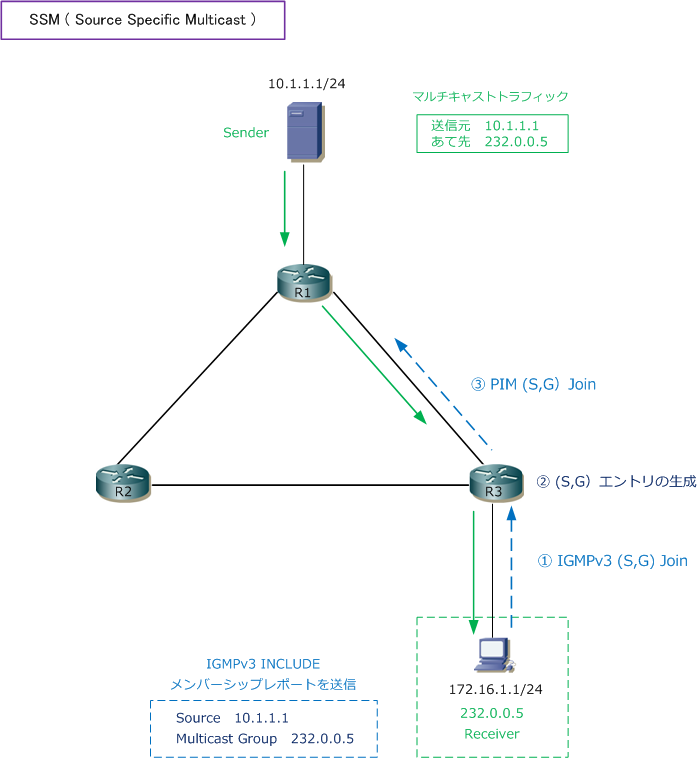
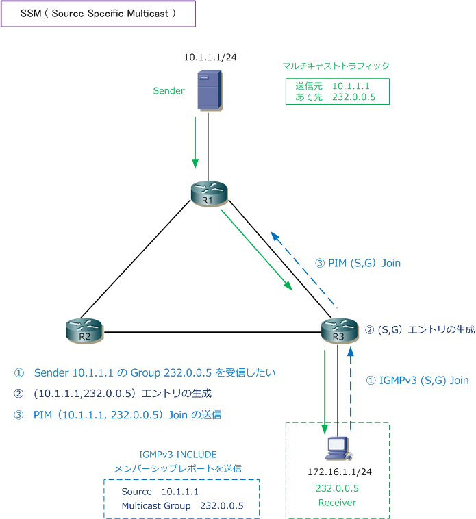

SSM ( Source Specific Multicast )
SSM（Source Specific Multicast）とは
SSMは、PIM-SMから派生したモードであり「one-to-many」のマルチキャスト通信で効率よくパケット 転送できる実装です。PIM-SMにおける（*,G）エントリを作成せずに、（S,G）エントリのみを作成して、 SenderからReceiverへとマルチキャストパケットをルーティングします。つまりSSMの動作では最初から PIM-SMの「スイッチオーバー後の動作」をします。SSMはRFC4607で定義されています。
RPが存在してShared TreeからShortest Path Treeへ遷移するPIM-SMの動作は複雑です。そもそもRPが 必要なのはどのホストがマルチキャストパケットを送信するのかを事前に分からないというモデルですが、 現行のニーズがある1つの既知のホストから多数のReceiverへ送信したい「one-to-many」だけ良い場合 最初から（S,G）Joinすればよく、PIM-SMを実装するのではなくSSMを実装することの方が適しています。

SSMを実装する前提として、ルータ側ではPIM-SSMをサポートしている必要があります。Receiver側では IGMPv3をサポートしている必要があります。
IGMPv3にはEXCLUDEモードのメンバーシップレポートもありますが、SSMではIGMPv3 EXCLUDEモードの メンバーシップレポートをサポートしていないことから、IGMPv3 INCLUDEモードのメンバーシップレポート を使用します。INCLUDEは「指定したSenderから指定したマルチキャストパケットを受信する」という意味、 EXCLUDEは「指定したSender以外から、指定したマルチキャストパケットを受信する」と意味となります。
SSMの動作
先ず、Receiverから「特定のSenderであるソース（S）と特定のマルチキャストグループ（G)」に参加する シグナリングメッセージを送信します。Receiver側からの、この（S,G）シグナリングは、以下のいずれかの プロトコルで生成されるのでReceiverでサポートされている必要があります。一般的にIGMPv3を使用します。
| Receiver側でサポートが必要 | 説明 |
|---|---|
| IGMPv3 | ・ IGMPv3のINCLUDEモードのメンバーシップレポートで実現 ・ SSMで一般的に利用されるプロトコル |
| IGMPv3 lite | ・ SSMのアプリを利用できるようにするためのCisco独自のAPIで実現 ・ IGMPv3をサポートしていないホストで利用される |
| URD（URL Rendezvous Directory） | ・ Cisco独自のWebブラウザベースのアプリケーションで実現 ・ URDインターセプトURLにより、ラストホップルータへ（S,G）を送信 |
IGMPv3をReceiverに実装している場合のSSMの動作は以下の通りとなります。
1. ReceiverからラストホップルータへIGMPv3（S,G）Joinメッセージを送信 2. ラストホップルータで（S,G）エントリを作成 3. ラストホップルータから、Senderの方向に向かってPIM（S,G）Joinメッセージを送信

このSSMの動作により、ファーストホップルータからラストホップルータとの間で送信元ツリーが作成されて 最短パスでSenderからReceiverはマルチキャストパケットが転送されます。なお、PIM-SMを実装する場合は 各ルータにおいてRPアドレスを設定する必要がありましたが、SSMによりマルチキャストルーティングを行う マルチキャストグループでは、RPアドレスの設定は必要ありません。
SSMの特性
・ 不正なマルチキャストパケットの受信を防げる PIM-SMの場合、Senderは意識せずにマルチキャストグループに参加してReceiverはパケットを受信します。 SSMの場合は特定のソース（Source Specific）のマルチキャストグループに参加してReceiverはパケットを 受信することになり、不正なSenderからのマルチキャストパケットを受信せずに済み、DoS攻撃を防げます。
・ SSMで使用するマルチキャストアドレス SSMで使用するマルチキャストアドレスは「232.0.0.0 ～ 232.255.255.255」の範囲です。Cisco機器の 場合は232.0.0.0/8（232.0.0.0 ～ 232.255.255.255）の範囲でSSMを利用する場合は以下の設定をします。
Cisco(config)# ip pim ssm default
232.0.0.0/8 以外のマルチキャストアドレスを使用したい場合「ip pim ssm range」コマンドで定義します。 例えば、SSM用に「239.1.1.5」のマルチキャストアドレスを使用したい場合には、以下のように設定します。
Cisco(config)# access-list 1 permit 239.1.1.5
Cisco(config)# ip pim ssm range 1
参考：SSMとISMの連携
マルチキャストグループアドレス範囲の設定済みのサブセットにSSM配信モデルを適用することで、SSMと ISM（Internet Standard Multicast サービスを一緒に使用することは可能です。 ⇒ SSM can work in conjunction with the ISM service.